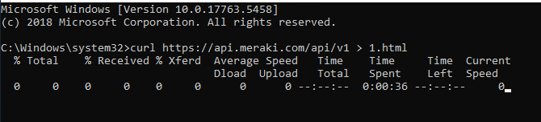

Symptoms
When configuring a Meraki dashboard data source, the following error appears:
Source: Network Devices Audit Service
Event ID: 6023
Unable to process item: The network path was not found.
When searching for the Meraki dashboard data source, no data is available.
Cause
This error indicates an incorrect port configuration on the side of the Meraki Dashboard data source.
Instructions
To identify whether the Netwrix server can receive data from the Meraki API, open the command prompt as an administrator and execute the following command:
curl https://api.meraki.com/api/v1 > 1.html
This is an example of a response when the product cannot access the Meraki API:

In this case, check the ports required to audit the Meraki dashboard source and their internal firewall. Learn more about required ports and protocols in this article: Data Source Configuration — Network Devices — Network Devices Ports — v10.6.